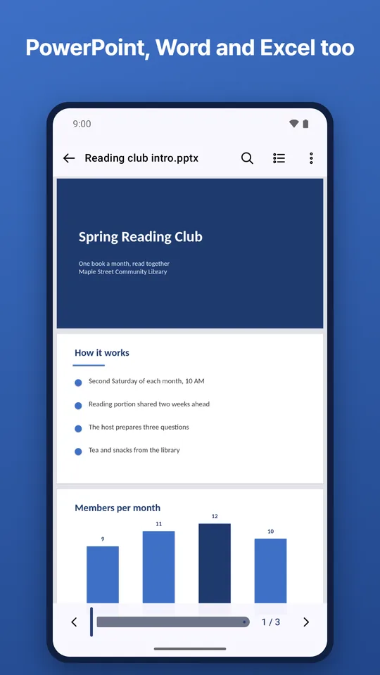

PeriDoc: Leitor HWP PDF Office
Abra HWP, PDF e documentos Office sem internet. Rápido, leve e privado.
Google Play



O PeriDoc é um leitor de documentos rápido, gratuito e seguro para Android. Abra ficheiros HWP, HWPX, PDF, Word (DOCX), Excel (XLSX) e PowerPoint (PPTX) diretamente no telemóvel ou tablet. Não precisa de conta e os seus ficheiros nunca são enviados para lado nenhum.
Leitor de HWP e HWPX
Precisa de abrir ficheiros HWP de uma escola, empresa ou serviço público da Coreia? O PeriDoc abre documentos do processador de texto coreano Hangul (HWP, HWPX, HWP 3.0, HML) criados com o Hancom Office, mantendo tabelas, imagens e a paginação. Os tipos de letra coreanos estão incluídos para que o texto apareça corretamente, e pode importar os tipos de letra do seu computador para um resultado ainda mais fiel.
Leitor de PDF
Leia ficheiros PDF com fluidez, com pesquisa de texto, seleção e cópia, índice, miniaturas das páginas e suporte para PDF protegidos por palavra-passe.
Visualizador de documentos Office
Veja facilmente documentos Word (DOCX), folhas de cálculo Excel (XLSX) e apresentações PowerPoint (PPTX) sem instalar pacotes Office pesados.
Pesquisa dentro dos documentos (com OCR)
Encontre texto dentro dos seus documentos, não apenas nos nomes dos ficheiros. O PeriDoc indexa os ficheiros do dispositivo para que uma pesquisa mostre de imediato o ficheiro e a página onde está o resultado. O texto de PDF digitalizados e de fotos é reconhecido apenas no dispositivo (OCR) e incluído nos resultados.
Pesquisa inteligente (opcional)
Não se lembra das palavras exatas? A pesquisa inteligente compreende o contexto e o significado para encontrar documentos relacionados e cenas nas suas fotos. Transfira o modelo uma vez (cerca de 388 MB) e, a partir daí, todo o processamento fica no seu dispositivo, sem internet.
Otimizado para dobráveis e tablets
Segure na horizontal um Galaxy Tab ou um Galaxy Fold desdobrado para ver a lista de ficheiros e o documento lado a lado. No modo Flex (meio dobrado), o documento fica na metade de cima e os controlos de página ficam à mão na metade de baixo. Suporta atalhos de teclado (como Ctrl+F) e deslocamento com a roda do rato.
Mais tipos de ficheiro
Texto (TXT), Markdown (MD), CSV, HTML e imagens (JPG, PNG, WebP, HEIC, GIF, BMP).
Funcionalidades
- Uma página de cada vez ou deslocamento contínuo, duas páginas lado a lado na horizontal, zoom com dois dedos
- Pesquise nos documentos, selecione e copie texto, copie tabelas em CSV
- Navegue facilmente pelo índice e pelas miniaturas das páginas, e retome a leitura onde parou
- Pesquisas recentes, todos os resultados de um documento num relance e atalho no ícone da aplicação para pesquisar rapidamente
- Rode páginas, guarde uma página como imagem, guarde em PDF, partilhe ou abra noutra aplicação
- Gestor de ficheiros integrado que encontra todos os documentos do dispositivo, com pasta Lixo e atalhos no ecrã principal
- Defina o PeriDoc como aplicação predefinida para abrir de imediato anexos do Gmail, apps de mensagens, Transferências e gestores de ficheiros
- Tipos de letra coreanos incluídos e opção de importar os seus próprios tipos de letra a partir de um computador
Privado e offline
- O PeriDoc nunca carrega os seus documentos na internet nem os envia para lado nenhum, e a área que desenha os documentos não tem acesso à rede.
- A indexação, o reconhecimento de texto (OCR) e a pesquisa inteligente funcionam apenas no dispositivo, sem enviar dados para lado nenhum.
- Abre documentos sem internet. Sem registo e sem iniciar sessão.
- A internet é usada apenas para um pequeno anúncio em banner na parte inferior do ecrã (Google AdMob) e para transferir o modelo da pesquisa inteligente.